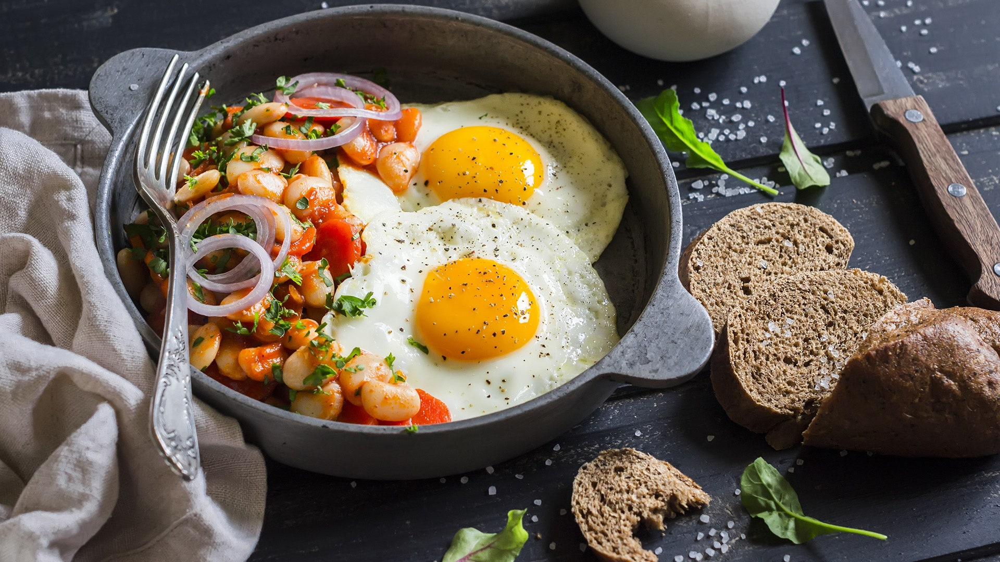
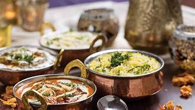

Foodish Mumb@i Restaurant
Deliciosness jumping into the mouth

|
ThaliThis is one of our speciality which is liked by most of the people. Near about 3-4 lakhs people enjoy this dish every year.This dish imcludes 10 sabjis and a lot more stuff. we are damned sure you will love it.Price 350Rs |
 |
Khaman-dhoklaOne of the most famous breakfast of foodish mumbai is Khaman-Dokla. This dish is liked by most of the foreigners and childrens asa well as every aged people.
|
 |
SabjiWE provide a different varieties of sabjis which are innovated by our masterchefs. This includes a lot of |
CoffeeWhere ever you go, you |

|
|
SamosaThis is one of the most comman food loved by many people. It is very cheap and people enjoy this food with lot of enjoyment.Price 20Rs |
Rice PlateYou Must eat rice plate at foodish mumbai restaurant. |